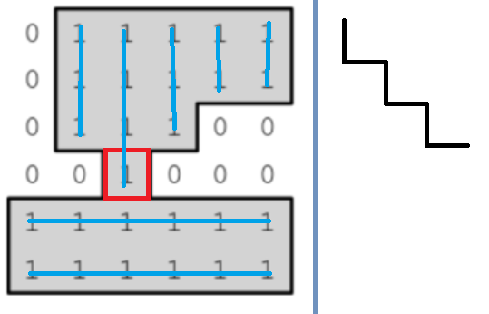
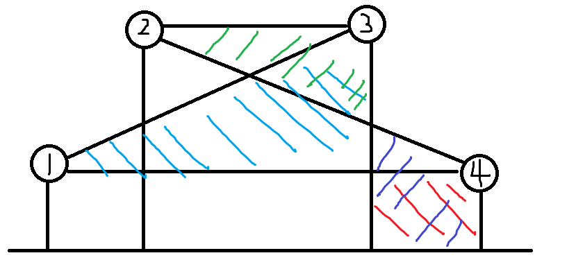

2020-2021 ICPC Asia Seoul Regional Contest 赛后总结
https://codeforces.com/gym/102920
C**，打的是真尼玛的屎啊！
大败而归了，哭。
A
纯纯暴力题，队友写的。
不过还是要注意实现细节，以后还是要自己多做一下这种题，不能天天交给队友。
B
签到题，交给队友了。
C
题意：给你一棵树，有一些点是公寓，现在一个点 $x$ 是好点，当且仅当：$\forall y,\exists z$ 使得 $z$ 是公寓且 $dis(x,z)<dis(y,z)$ 。
做法也是非常简单，显然公寓一定是好点。
其余点是好点的充要条件是以这个点为根时，必须要有两棵子树里面有公寓。
时空复杂度：$O(n)$ 。
1 |
|
D
非常巧妙的一道 DP 题，但是不可否认的是 n^3 过 1000 真的非常的屎。
题意是这样的：你有一辆车，有个油量 $W$ ，有 $n$ 个加油站，从一个城市到另外一个城市消耗的油量是曼哈顿距离，每个加油站加油有费用，然后问你从起点到终点的最小费用，同时还有限制，加油次数不能超过一个值。
这道题目用到了一个很有意思的点，一定存在一个最优方案，使得：当一辆车在连续两个加油站都加了油时，一定会有一个加油站加满了油或者到达时没有了油。
证明
第一个加油站的费用设为 $w1$ ，第二个设为 $w2$。
当 $w1\le w2$ 时，我们显然可以在第一次把一些第二次加的油提前加了。
反之，则可以在第二次加上第一次的油使得第一次不加油或者到达第二个加油站时恰好没有油。
利用这个性质，我们可以设计出 DP 状态。
$f_i$ 表示从一个加油站出发且加满油时的代价，$g_i$ 表示到达一个加油站且没有油时的代价。
然后转移有两种，一种是只走一条边的，一种是走两条边的，处理两条边转移的复杂度是 $n^3$ 的，所以是 $n^3$ 的。
至于 $\Delta$ 的话，可以先处理出 $n^2$ 的转移矩阵，然后就可以 $n^2\Delta$ 做完了。
时间复杂度：$O(n^2(n+\Delta))$ 。
至于转移，有四种：$f,g->f,g$ ，但是实际上需要 $n^3$ 处理的只有一种。
思考一下，加入司机没油出发，那么显然需要加油再走，这时途径一个加油站并且加了油，设出发加油站加油费用 $w1$ ，中间站 $w2$ 。
当 $w1\leq w2$ 时，显然我们要么加满出发，或者不用去中间站加油，反之我们到达中间站的时候油量为 $0$ 更加优秀。
而当我们到达终点站时加满油，同样可以与中间进行比较，发现中间可以存在中继状态。所以我们其实只需要在转移 $g->g$ 时转移一下就行了。
状态转移方程：
对于点 $x,y$ ，且 $dis(x,y)\le W$ 。
四种转移都是比较显然的。
然后枚举 $x,y,z$ ，转移一下即可。
扩展：关于循环论证
刚刚在证明转移的时候突然发现的一个事情：
一个很简单的例子，现在有一个圆盘，上面有 $n$ 个格子，其中一个格子放了小球，这个时候你放了一个球进去，然后证明：圆盘中任意的相邻个位置有一个小球，逻辑是这样的：
现在小球在 $1$ 号位置，你观测 1,2 ，发现的确，然后推球进了 $2$ 号位置，观测 $2,3$ ，也发现的确。
这样子的证明问题在于方案不一定是同一个了，同理，当我们在证明一个事情的时候，总是会说，显然存在一个最优方案满足一个局部条件，但是不一定存在一个最优方案满足所有的局部条件。
这个时候有两种解决方法：
- 人为的给最优方案之间加上另外一个限制条件，使得最优方案中也有优劣之分，类似相等时加上浮动使其存在偏序关系，本质为人为构造了偏序关系。
- 证明确实就是存在最优方案满足所有的局部条件，证明方法很多，例如可以证明最优方案经过调整某个值只减不增等等。
为什么突然提到这一个问题呢？
因为上面在证明的时候我突然意识到一个问题，我上面有句话：总是存在一种最优方案使得 $x->y->z$ 的转移只用转移 $g->g$ 。
其中的证明逻辑为：其余的情况我总是可以通过其余的转移完成，这在这道题目是对的，但是有时候其又有可能是错的，因为可能会循环论证，虽然这种情况一般不会发生，但是我毕竟是遇到过的，还是要引以为戒。
至于这题，为什么这样的证明是正确呢？
原因很简单：举个例子，当我需要从 $f->g$ 时，如果需要经过 $x->y->z$ 转移，我也一定可以通过 $f_x->g_x->g_z$ 或者是 $f_x->f_y->g_z$ 进行转移，我证明的，只是某种转移总是可以被另外一些转移覆盖，你可以理解为优化后的转移方式 $S$ 是原来转移方式 $G$ 的子集，但是 $S$ 可以实现 $G$ 的所有功能，我们仅仅证明了这个，而这种优化的证明，显然不会出现循环论证的情况，因为这种证明既不会影响前面的决策，也不会影响后面的决策，仅仅是改变了中间转移时的决策，证明了有些决策是冗杂的，可以去掉的而已，所以不会出现循环论证的情况（相对应的，所有类似的证明方式都不会出现这种情况）。
当然，也需要注意，如果你证明优化转移的方式并不常规，也就是和我们上面讲的证明并不类似，有一些本质的区别，那就需要注意会不会循环论证了，毕竟我们上面只是针对某种证明方式去论述其不会出现循环论证，如果你的证明方法并不是这一种，那还是多加小心为好。
毕竟，我之前是真的有过因为这种事情而假过做法的QAQ，如果这种事情出现在了重大的赛事上，那真的就是永生难忘了QAQ。
E
也是非常简单的题目。
做法为，出现奇数次的 $1$ 和后面出现偶数次的 $1$ 配对，$2$ 只能出现在配对的 $1$ 中间。
时空复杂度：$O(n)$ 。
证明
证明奇偶性的简单方法：去掉绝对值，给一些数字标上 $-$ ，那么权值和应该为 $0$ ，所以加上绝对值后 $D$ 序列的总和应该为偶数。
考虑本质，显然我们只需要考虑相邻两个数字的比较关系，我们可以在相邻两个数字间画上箭头，一个数字被箭头所指向的次数，我们可以认为就是这个位置的有效权值，显然，非相邻数字的比较关系不可能贡献给 $D$ 序列的。
而我们现在就是要改变箭头的方向从而得到一个位置有效权值的改变量。
显然，对于任意一种我们认为的合法 $D$ 序列，我们总是可以构造出来一种箭头和改变箭头的方案使得其满足 $D$ 序列。
而只有连续改变箭头，才会在端点处出现 $1$ ，否则都为偶数，所以 $2$ 只能被成对的 $1$ 包含在里面，证毕。
1 |
|
反思：找不到错误的时候。
当你实在找不到代码和做法的问题的时候，不妨考虑一下是不是题意读错了，赶紧去重新读一遍题意或者叫队友读一遍题意。
F
题意：有 $n$ 个颜料桶，有 $m$ 个初始有不同的颜色，同时还有一些有向管子，表示颜料从第 $x$ 个颜料流到第 $y$ 个颜料桶。
然后颜料混合会产生新的颜色，注意：因为管子流速不同，所以即使是同两种颜色，只要是在不同的桶中，就会配出不同的颜色。
最后问你稳定状态有多少种颜色。
至于颜料会不会流完等等问题，不太确定，反正也不会做，先鸽着。
G
纯纯傻鸟题，二分卡我时间。
但是存在 $O(n)$ 做法，简单来说就是终止状态有两种，递增，递减，直接针对两种情况判一下就行了，判断过程不难，自己想。
1 |
|
H
没看题，神仙队友AC了。
I
啊，我心中的痛啊！！！
显然，$n^2$ 个区间跑出来，就可以三位偏序了，按权值排序，然后用树状数组套数组爽过。
时间复杂度：$O((n^2+q)\log^2{n})$
根号做法
这里先讲讲：$O(n^2\sqrt{n}+nm)$ 的根号做法，但是这种做法大概率不如树状数组优秀，因为这边有一个组只维护了两个分块数组（指的是每次更新要根号的数组）用了 1500ms 。
考虑按照权值从小到大加入区间，维护以下几个数组：
$bel[i]$ 表示 $i$ 在第 $bel[i]$ 个块。
$f1[i]$ 表示块内答案。
$f2[i]j$ 表示右端点为 $i$ ，左端点在 $j$ ~ $bel[i]-1$ 的块内的最大答案。
$f3[i]j$ 表示左端点在 $j$ ~ $bel[j]$ 块的右端，右端点为 $i$ 的最大答案。
不难发现，插入一个区间可以 $O(sqrt{n})$ 更新。
然后每次修改暴力枚举 $i$ $O(n)$ 查询完就行了，块的两端随便处理一下就行了。
接着讲一下我自己的同复杂度做法，但是多维护了一个分块数组，大概率是过不了的。
$f1[l][r]$ 表示块 $l$ ~ $r$ 的最优答案。
$f2[i][j]$ 同上。
$f3[i][j]$ 类似 $f2$ ，只不过 $j>bel[i]$ 。
怎么更新 $f1$ 呢？其实只需要转换一下更新模式就行了。
我们每过 $\sqrt{n}$ 个区间更新一下 $f1$ ，单次更新 $O(n)$ ，这样时间复杂度就是 $O(n^2\sqrt{n})$ 了，毕竟更新 $f1$ 最麻烦的就是枚举 $l,r$ ，我们把多次更新并到一起岂不美哉。
这里就要说一下为什么他是三个数组我是两个数组了，实际上就是我没有灵活应用好这个 $nq$ 了，因为询问的时间复杂度实在是太松了，所以实际上很多操作可以等到询问再处理，例如他的做法之所以比我的做法少了一个分块数组，实际上就是他多了枚举区间所有位置统计答案的步骤，而我只用枚举区间两端的散块，也就是我牺牲了修改的常数换取了询问的尝试。
实际上如果我也进行遍历区间的操作，我也能省掉 $f1$ ，只维护两个分块数组。
UPD：其实写到这里我突然又觉得我的不一定会比上面的做法慢，因为虽然我比他多了一个分块数组，$n^2\sqrt{n}$ 常数多了 $1$ ，但是询问少了一次遍历整个区间，所以 $nm$ 少了一个 $1$ ，而 $n^2\sqrt{n}<nm$ ，说不定还能跑的比上面的做法快，所以说到底没有 AC 纯粹就是懒得写。
重回正题，不难发现，这两个做法合一起就能 $O((n^2+m)\sqrt{n})$ 了。
整块对整块的方法用我的方法处理，整块对散块就必须两个方向都处理一遍了，即我的做法的 $f2,f3$ ，区间两端的散块对散块，采用上面做法的 $f3$ 处理，至于散块内部（散块内部用于询问在块内和区间两端的散块内部），也很简单，定义类似 $f1$ ，但是更新却很简单。
即：$ff[l][r]$ 表示一个块内 $[l,r]$ 的最小值，每次出现这个块内的答案就更新一下，单次更新 $O(n)$ ，但是一个块最多更新 $\sqrt{n}*\sqrt{n}=n$ 次，只有 $\sqrt{n}$ 个块，所以至多更新 $O(n^2\sqrt{n})$ 次，这样就完成了对 $ff$ 的更新，人话讲就是：暴力更新，复杂度是对的。
当然，你也可以采用和 $ff$ 类似的技巧，将其的更新复杂度降到：$O(n^2)$ ，但是没有这个必要，因为这道题目的时间复杂度瓶颈多了去了，你去掉一个瓶颈时间复杂度照样下不来，还更难写了，没有这个必要，直接暴力更新就是最好的选择。
队友做法
队友赛时想的 $O(nm\alpha(n))$ 做法。（但是赛时被心态已经爆炸的我认为很难写且会超时，给直接给否决掉，导致我们最后都没有 AC 这道题目。）</summary>
简单来说，前缀和，然后排好序（从小到大），然后每次查询就按排好序的方式拿出序列。
假设 $A$ 是我们询问的区间 ，$A’$ 是 $A$ 排序好的区间。
使用双指针，找每个位置 $i$ 最靠左的 $j$ 满足 $A_i-A_j\le U_i$ ，显然，如果 $j\le i$ ，这就是当 $i$ 为右端点的最优方案。
但是不一定，因此我们考虑从右到左删除数字，到 $x$ ，先看其的贡献，然后删除，那指向他的那些 $i$ 怎么办呢？答案是指向 $x$ 右边那个数字。
那么我们就需要一个支持单点删除，并且快速查询一个位置右边第一个没有被删除的位置是哪个的数据结构，显然就是并查集了。
然后就做完了。
J
纯纯傻鸟题，线性基就做完了。
显然如果你能构造出来每一种方案，那么你原来的方程组一定是满秩的。（线性变换前后秩不变，而最终方案的秩为 $n$ ）
那么线性基的时候用 bitset 记录一下方案，不就做完了吗。
时间复杂度：$O(\frac{n^3}{w})$
K
当时做这道题目犯了一个致命的失误，我以为可能会无解，然后觉得太难了，就没想这道题目，但实际上我当时想的误解情况是非法的。
当时觉得一个“工”字不存在方案，现在突然发现工字不满足题目的限制，做这种构造题就特别容易出现构造一个在自己认为无解的反例，然后觉得题目太难不可做，扔了，但实际上反例是非法的情况。
先说一点，题目应该是一定有解的，这是做这道题目一开始就应该要有的直觉，不然出题人给这么多限制条件干嘛，又是洞又是周围必须要有两个 $1$ 啥的。
关于洞的描述，其实有个很规范且简单的说法，假设地图无限大，那么 $0$ 的连通块应该只有一个。
然后就是怎么做的问题了，显然，对于一个长度 $\ge 2$ 的横条，一定存在解。
因此我们考虑将这个连通块不断竖切，得到一堆长条，然后就差不多做完了。
但是有一个例外：如果一个格子上下没有连接 $1$ 而左右连接了 $1$ 咋整，形成了一个类 “工” 字，因此我们考虑对于一个连通图的某些部分横切，某些部分纵切，显然，对于刚刚的情况，我们就希望两边连接的部分有一个部分是横切的。
这个时候，联系一下为什么题目要限制洞？不难发现，整个图形成了一个类似树的形状，再想想一棵树除根节点外的每个点都能独立对应一条边，再结合我们希望一个特殊格子其连接的两端有一端能对他负责，就不难想到最终的做法。
我们将只有上下联通 $1$ 或者左右联通 $1$ 的格子抽象为边，将不是这种的 $1$ 形成的连通块抽象成点，然后从一个点出发，每个点和其边绑定，方向由边决定，然后这样切一下就解决了。
注意，一条边其实不一定由一个格子构成，可能是由一条特殊的 $1$ 构成的链组成。
这个做法最大的误区是以为一个阶梯状的链上面全是特殊点，实际上这个阶梯状的链上一个特殊点都没有，因为其不符合之前说的要么上下，要么左右。

感觉这道题目虽然难写，但是思维难度也是不低的，非常的有意思。
可惜不是我想出来的QAQ，是别的队伍在赛时做出来了，赛后跟我们讲的QAQ。
L
这道题目没做出来，可是真的就差点了QAQ。
之前做过一道类似的题目，这道题目也是很快就想到了应该有决策单调性，但是一直搁那列式，就是找不到单调性（机房中还是有人是列式找到单调性的，比较NB），最后画了个图找出来了。
显然，题目可以转化为求梯形面积（经典数形结合），需要考虑的点构成一个八字，且只需要考虑八字的左边与八字的右边匹配的情况。

假如 $1$ 在 $4$ 的决策比在 $3$ 好，那么 $2$ 的在 $4$ 的决策也比 $3$ 好。
从图中就可以看出来：蓝<红 ，绿<蓝，紫>红，显然紫>绿。
然后分治一下就做完了，时间复杂度：$O(n\log{n})$
另外引用一下同机房另外一个人的直觉流做题法
在八字上，$(h_i+h_j)*(j-i)$ 。
$i$ 往右移动，$(j-i)$ 下降，$(h_i+h_j)$ 上升。
$j$ 往右移动，$(j-i)$ 下降，$(h_i+h_j)$ 上升。
$j$ 往左移动，$(j-i)$ 上升，$(h_i+h_j)$ 下降。
那么根据和固定，两数越接近乘积越大的均衡思想（这里不是说和是固定的，是从这个定理中可以看出应该数字越接近，乘积越大的均衡思想），我们应该用让 $j$ 往左移动，所以这道题目应该存在决策单调性，且方向是 $i,j$ 同向的。（不过他们赛时脑子有点晕，没有很肯定方向，求稳把两个方向都做了一遍。）
当然这种直觉流做题不能太过依赖啊，只有刷题量大的选手才能用的好，因为大量的题目能让他们做出正确的判断，比如这个大佬可能就是以前做过类似的乘积存在单调性的题目才能这么快察觉应该有决策单调的（毕竟感觉这个题目比较经典，他应该是做过的），上面这一套说法应该是其在察觉到决策单调后所想的一个比较简单的方法用于去阐释决策单调的，也就是先射箭后画靶。（也有可能没有做过，的确是通过这么一个想法想到的决策单调，但是不可否认的是这个大佬的刷题量确实很大）
毕竟，同样的说法，我换个说法，就又是另外一个方向，假如 $(h_i+h_j)$ 很大，那我为什么不能 $i,j$ 全部往外走，减少 $(h_i+h_j)$ ，增大 $(j-i)$ 呢？
所以，如果对直觉做题法不够放心的话，还是老老实实确定了正确性再写吧，不过感觉最正确的姿势应该是：先用直觉找到大致方向，再确定正确性，然后开写。当然，如果感觉很难证，结论又感觉很正确，又不难写，队伍里面有没有要写的题目，也可以不妨写一下尝试一下，说不定就过了，过的了血赚，过不了就换个方向，以写代证伪，节省了证伪的时间。
坑
- 亲手写一些代码。
- 补充一个关于状态转移和状态转移优化的理解。
- 把没有做的题目自己做一遍。
- 自己去看一遍官方题解并且补充一下官方题解的做法。
- 补充 $L$ 题的推式子证明方法。